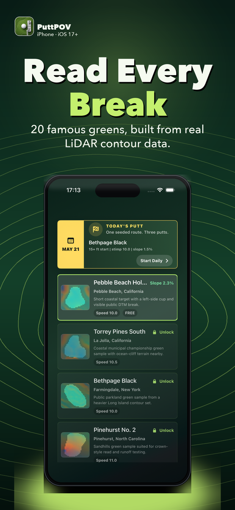
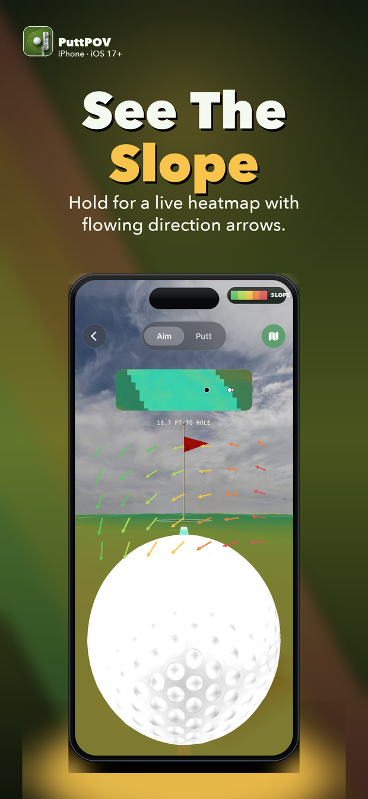
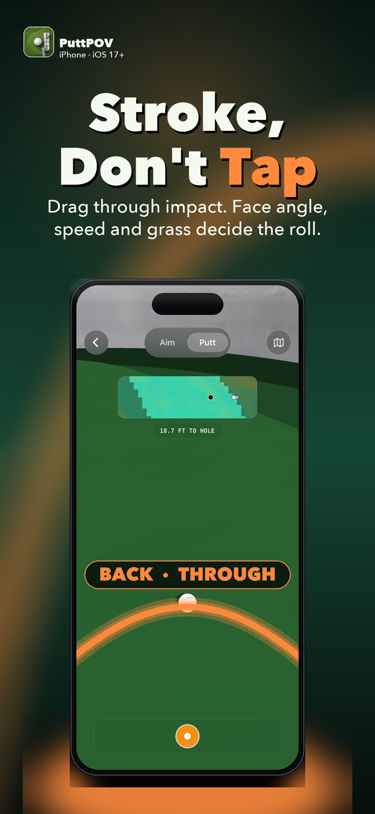

01
Aim from the ball
Set your alignment line in a close golfer’s-eye view.
02
See every break
Hold to reveal the slope heatmap and moving break arrows.
03
Stroke, don’t tap
Drag back and through impact. Speed and face path shape the putt.
04
A fresh daily challenge
Practice one included green, then unlock the full library with a one-time purchase.


